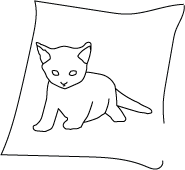

Web PortFolio
My WebDesign
HTML, CSS, JavaScript
해당 패이지는 팬아트를 이용해 만들었습니다
☆이 있는 이미지에 마우스를 올려보세요!


Web PortFolio
HTML, CSS, JavaScript
해당 패이지는 팬아트를 이용해 만들었습니다
☆이 있는 이미지에 마우스를 올려보세요!
안녕하세요. 신입 퍼블리셔 이완주입니다.
저는 어릴적 취미 덕분에 세밀한 작업에 관심이 많았습니다.
그 영향으로 레이아웃과 펜툴같은 세심한 작업을 즐기고
코딩을 배우는 과정에서 코딩의 매력을 느낄 수 있었습니다.
개인 프로젝트에서는 개인적인 부족함을 느끼고
팀 프로젝트를 통해서 협동과 소통이 얼마나
중요한지 배우는 소중한 기회가 됬습니다.
이르다고 할 수 없는 나이지만 겨우 찾은 흥미에
가슴뛰는 매일을 보내고 있습니다.
아직 부족한 부분이 많지만 최선을 다하겠습니다.
Name : 이완주 ( 1992 .07 .21 )
Phone : +82) 010-7276-8117
Mail : dhkswn15@naver.com
대전 세잔 직업전문학교 프론트엔드 과정 수료
SBS 아카데미 옥외광고디자인 과정 수료
공주공업고등학교 졸업
컴퓨터활용능력 2급
승강기기능사
이미지 클릭 시 해당 이미지의 상세설명이 나옵니다.
국순당은 우리나라 전통주의 역사를 이어가는 기업입니다.
기존 디자인에서는 그런 부분을 충분히 부각시키지 못한듯
하여 한지 질감과 전통화를 이용하여 그러한 부분을 강조
했습니다. 또한 백세주를 강조하기 위해 이미지 중앙에
제품을 배치하여 자연스럽게 어우러지도록 디자인했습니다.
요즘 행사나 이벤트에서 쿠폰은 필수적이라 생각합니다.
특히 스킨푸드는 다양한 이벤트를 진행하는 브랜드로
쿠폰형 배너를 제작하기에 딱이라고 생각했습니다.
쿠폰 특성상 작은 공간에 꼭 필요한 부분을 강조해야하기에
브랜드와 쿠폰만을 강조해봤습니다.
인터넷에서 멋있는 배경이미지를 찾게되어 욕심이 생겨 만든
아트웍입니다. 배경 자체는 원본에서 채도만 낯춘 것이지만
그대로이지만 드래곤, 사람, 까마귀 등은 추가로 합성한 것이며
배경과 어우러지게 하기위해 필터효과와 채도, 명암 등을
추가로 조정하여 만들었습니다.
서점이라는 컨셉에 맟춰 책표지 형식으로 만든 포스터입니다.
단조로운 구성을 위해 이미지는 최대한 배채했으며
색상도 책에서 직접 추출해 사용했습니다. 또한 책이 찢어진
질감을 추가하여 이벤트 날짜 등을 강조하였습니다.
심리학에서는 현대사회를 '우울의 시대'라고 부른다 합니다.
거기에 발맟춰 이맘때라는 슬로건으로 정부에서 지원하는
심리지원 사업이 있어 소개하고 싶은 마음이 있었습니다.
기존 디자인도 심플하고 눈에 띄었지만 저는 아기자기하고
연필로 그린 듯한 이미지로 친근하게 다가가고자 했습니다.
도서ㆍ서점 이벤트를 컨샙으로 제작한 배너입니다.
'책'이라는 특성에 맟춰 기본 종이질감에 찢어진 택스쳐를
입혀 누가 보더라도 잭과 관련된 이벤트라는 것을 어필하고
종이에는 이벤트명과 목적을, 찢어진 택스쳐에는 이벤트 기간과
주최측 내용을 정리해봤습니다.
최근 세계적으로 이슈가 되고있는 탄소제로 관련 배너를
만들어봤습니다. 기존 디자인에서는 재활용에 대한 언급이
적어서 재활용을 강조하고 일러스트 이미지를 이용해
친근함을 주고 단조로우면서 주제에 맞는 색상을 통해
일관성을 주면서 관련 부서 로고를 크게 키워봤습니다.
과거 실제로 일했던 짬뽕집 간판의 초안입니다.
친구이자 사장의 부탁으로 초안을 제작했으며 짬뽕이라는 주제와
심플함을 동시에 추구하고 최대한 적은 수의 색상을 사용했습니다.
다만, 너무 단순해 보이지 않도록 뒷쪽에 패턴을 추가했습니다.
현재도 해당 간판으로 정상 영업중입니다.
프론트엔드로써 제 개인 명함이 필요할듯 하여 만든
명함입니다. 최대한 단순한 레이아웃을 구상했으며
최대한 적은 색상과 도형을 통해 포인트를 주어 너무 심심한
이미지를 받지 않도록 고안했습니다. 또한 배경에 대리석
질감을 추가해 흰색 바탕이지만 보는 재미를 더했습니다.
배달의 민족을 카드뉴스 형식으로 제작한 배너입니다.
배달의 민족은 홈페이지를 비롯해 모든 광고를 심플하게
제작하는 특징이 있어 될 수 있는 한 이미지와 텍스트를
적게 배치했으며 심플이라는 컨셉에 맟게 색상또한 단조로움을
살려 제작했습니다.
계절은 지났지만 한가위라는 테마로 제작했습니다.
처음에는 보름달을 강조하기 위해 배경을 어둡게 처리했으나
텍스트가 눈에 띄지 않는 단점이 있어 과감히 포기하고
텍스트를 강조하는 방향으로 진행했습니다.
삼성전자의 이벤트를 소개하는 배너로 B급감성으로 제작
했습니다. 인터넷에서 유행하는 신봉선씨의 포즈와 대사를
참고하여 해당 이벤트의 혜택을 강조하는데 주력했습니다.
다만, 실사이미지를 사용하면 텍스트가 눈에 띄지 않았기에
일러스트로 제작된 이미지를 사용했습니다.
제 포트폴리오는 심플을 강조하기 위해 최대한 단순한
작품들만 소개했습니다만, 너무 단조로운 인상을 받을
수 있다는 생각에 제작한 배너입니다. 꽃놀이라는 테마에
맟춰 테두리에 화사한 패턴을 사용하여 꽃놀이라는 주제를
살리기 위해 노력했습니다.
인터넷을 찾아보던 중 도박에 대한 포스터나 배너에서
도박이라는 키워드가 제대로 사용되지 않다는 이미지를 받았습니다.
그래서 우리나라에서 대표적이라고 할 수 있는 화투를 이용해
도박 근절 배너를 제작해봤습니다. 이번 작품도 심플을 기준으로
제작하였으며 화투패에 택스쳐를 넣는 형식으로 제작했습니다.
개인적으로 경찰은 청렴하고 푸른 느낌의 인상을 가지고
있습니다. 그래서 배경으로 푸른색하면 떠오르는 하늘이미지를
사용했으며 경찰의 마스코트 캐릭터인 포돌이를 넣어 누가
보더라도 경찰을 소개하는 배너라는 사실을 부각시켰습니다.